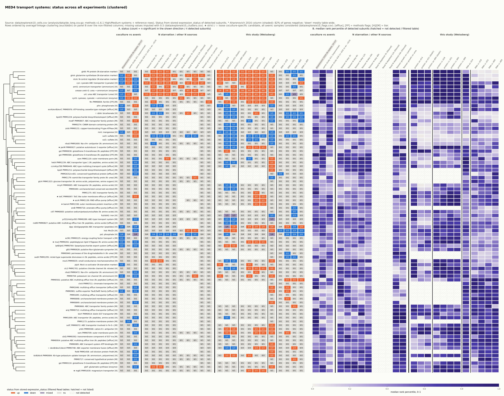
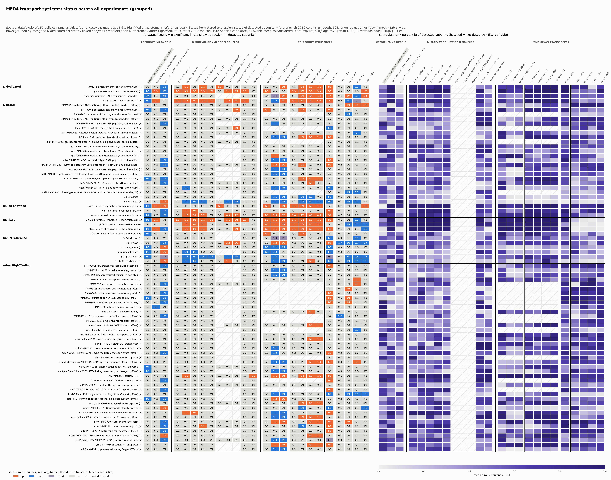
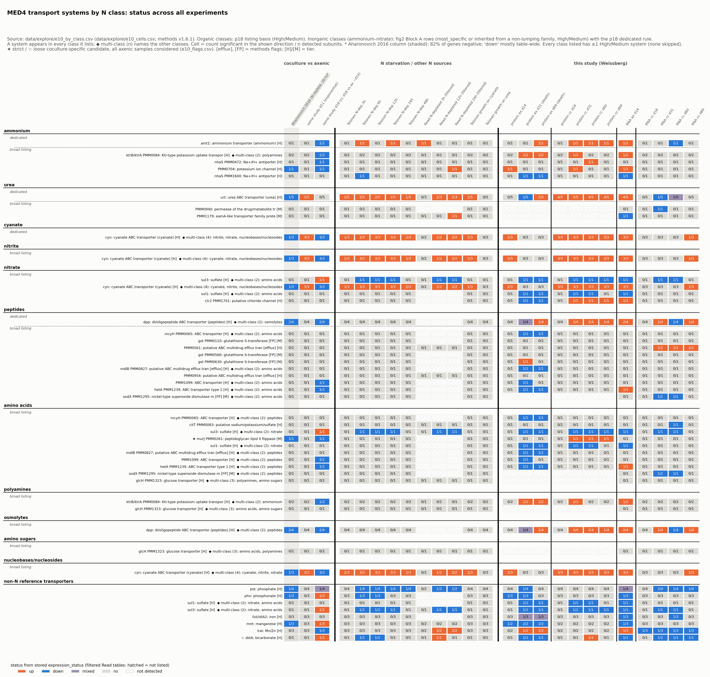
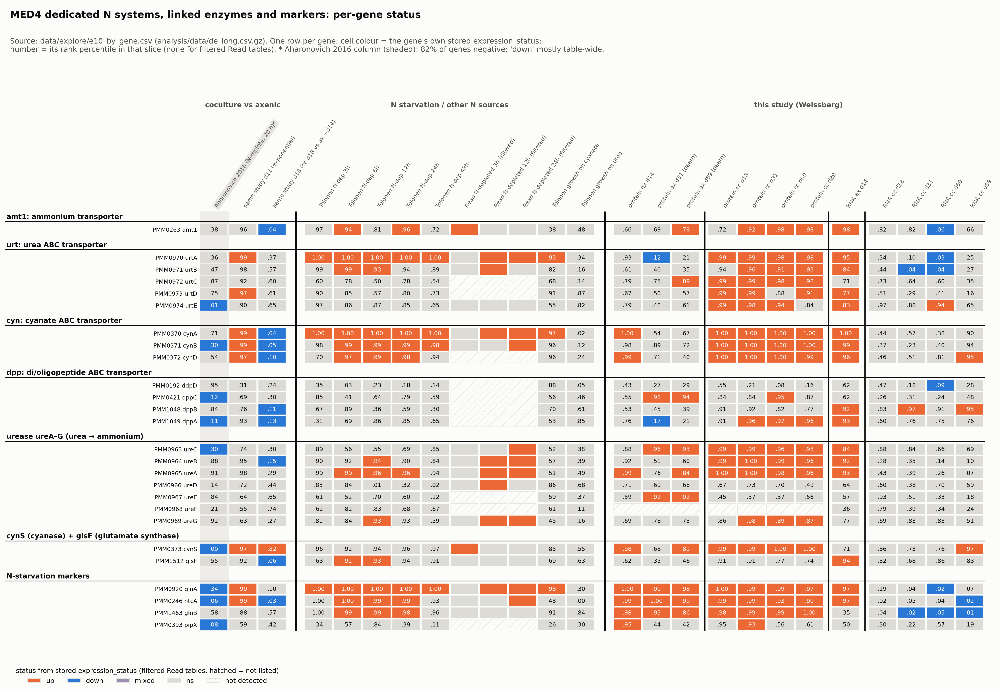
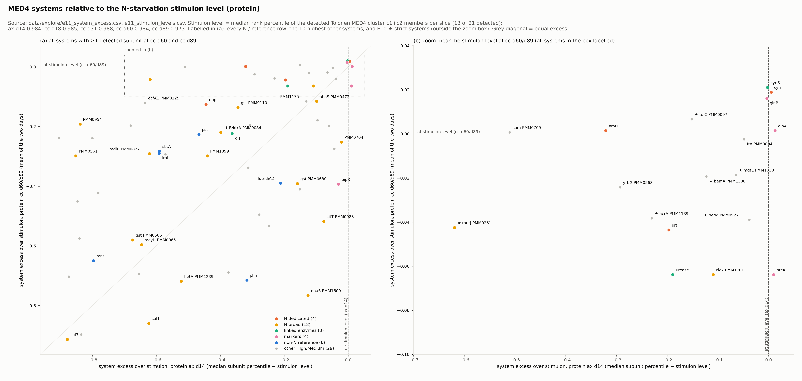
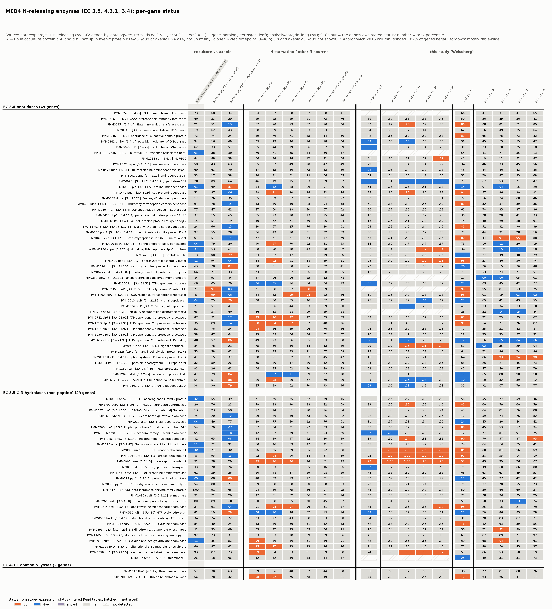
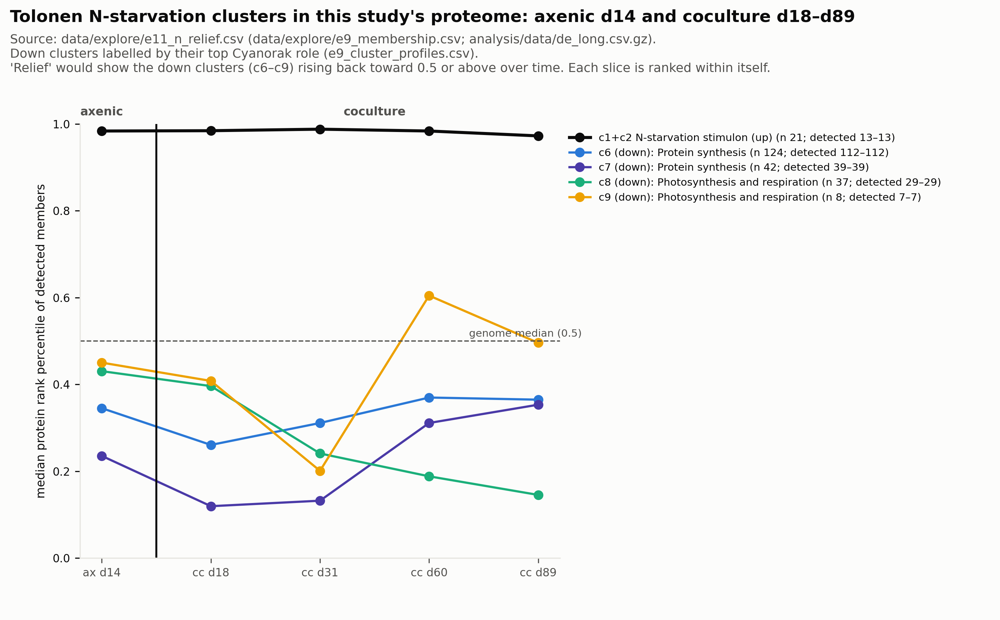

Analysis milestone · exploration (no labels) · companion to the data-exploration page
Every MED4 transport system, across every experiment
One row per system: 73 High/Medium transport systems, plus the starvation markers and N enzymes as reference rows. One column per experiment: coculture vs axenic, N starvation and other N sources, and this study’s protein and RNA time courses. The aim is to see which systems move with nitrogen stress and which behave differently in coculture.
Cell colour = the system’s status, from the source papers’ significance calls: orange = up (at least one subunit up, none down), blue = down, purple-grey = mixed, light grey = not significant, hatched = not detected. The number in the cell is subunits significant / subunits detected.
Right panel = median rank of the system’s detected subunits (purple; 1.0 = the most up-regulated gene in that experiment).
Column blocks:
Coculture vs axenic: Aharonovich 2016 in N-replete medium (shaded; that table is 82% negative, so “down” there is mostly table-wide), and the same-study contrast at day 11 and day 18.
N starvation and other N sources: Tolonen deprivation 3–48 h; Read N-depleted (filtered table, so only “up” counts); Tolonen growth on cyanate and on urea.
This study: protein and RNA, each split into axenic d14 (late decline) | coculture d18–d89.
★ coculture-specific candidate: up in coculture protein at days 60 and 89, and not up in any axenic sample (protein d14, d31, d89; RNA d14) or at any Tolonen N-deprivation timepoint. ☆ = a looser version. All axenic samples are late decline or death.
1. All systems, clustered by response

Rows ordered by similarity of response (dendrogram on the left). The top branch (9 rows) is the N-starvation response: glnA, ntcA, glnB, cyn, amt1, urease, urt and cynS, plus ferritin (a known false positive). These are up in Tolonen deprivation and throughout the coculture protein. Everything else falls into larger branches with no shared N response. Open the image in a new tab to zoom.

The same matrix, rows grouped by category (dedicated N / broad N / enzymes / markers / non-N) instead of clustered.
2. Systems that behave like coculture, not starvation
★ = up in coculture protein at days 60 and 89, and not up in any axenic sample (protein d14, d31, d89; RNA d14) or in acute N deprivation. Revised after the analysis critic: an earlier version checked only axenic d14.
System
What it is
cc d60 / d89
axenic d14 / d31 / d89
Flag
murJ PMM0261
lipid II flippase (cell wall)
0.95 / 0.92
0.36 / 0.27 / 0.81
★ ☆
tolC PMM0097
outer-membrane efflux channel
0.99 / 0.99
0.83 / 0.46 / 0.61
★ (already high at d14)
acrA PMM1139
RND efflux pump
0.96 / 0.92
0.75 / 0.26 / 0.40
★ (already high at d14)
bamA PMM1338
outer-membrane protein insertion
0.96 / 0.96
0.86 / 0.27 / 0.36
★ (already high at d14)
perM, mgtE
exporter; Mg²⁺ channel
0.94–0.96
0.92–0.95 at d14
★ (already high at d14)
som PMM0709
outer-membrane porin
0.97 / 0.99
0.47 / 0.99↑ / 0.88↑
not specific: up in dying axenic
yrbG PMM0568
cation:H⁺ antiporter
0.95 / 0.96
0.69 / 0.86↑ / 0.97↑
not specific
dpp
di/oligopeptide transporter
0.89 / 0.82
0.54 / 0.36 / 0.34
unresolved (axenic RNA d14 up)
[interpretation] What remains coculture-specific is a small cell-envelope set, chiefly murJ. Every axenic comparison here is with a declining culture, so “up in coculture, not axenic” can’t separate a partner effect from survival.
3. By nitrogen class

One panel per class: dedicated systems first, then broad listings. ◆ marks a system listing several classes; it appears in each of them. Within a class the systems disagree:
Ammonium: only amt1 is up (plus one nhaS at d60).
Peptides: only dpp is up; none of the 10 broad systems is.
Amino acids: only murJ is up; sul1/sul3 are down.
Nitrate: cyn and clc2 are up, but MED4 can’t use nitrate.
4. The dedicated N systems, gene by gene

One row per gene, same columns; the small numbers are ranks. This view shows differences within a system, such as between the dpp loci, or urtC/D/E against the rest of urt.
5. Three small follow-ups
Above the N-starvation stimulon

Each system’s protein rank minus the N-starvation stimulon’s (the Tolonen clusters that rise first). The stimulon sits at about 0.98 in every sample, so almost nothing can be above it; the largest excess is +0.02 (cynS, cyn). As a way to rank “beyond N stress”, this is uninformative: the N response is at its ceiling.
Enzymes that free ammonium from N compounds

80 MED4 genes with peptidase (EC 3.4), C–N hydrolase (EC 3.5: amidases, deaminases, urease) or ammonia-lyase (EC 4.3.1) activity. With the filter checked against all axenic samples, only the signal peptidase sppA passes (it processes proteins for export, not degradation). [interpretation] Apart from the urease that comes with the N response, no route that frees nitrogen from an organic compound is switched on beyond starvation.
Is nitrogen stress relieved?

The gene groups that fall under N starvation, in protein:
Protein synthesis (c6, c7) drops from axenic d14 to coculture d18, then climbs partway back by d60–d89 (c7: 0.12 → 0.35), still below the genome middle.
Photosynthesis (c8) keeps falling (0.40 → 0.15).
The stimulon stays at its ceiling.
[interpretation] At most a slight, partial recovery of protein synthesis late in coculture; no general relief.
What this adds
The N-import systems form one tight N-stress branch. Nothing in them says which compound MED4 uses.
What remains coculture-specific is a small cell-envelope set (chiefly murJ; more weakly tolC, acrA, bamA), and the comparison is with a dying axenic culture. The porin som is not coculture-specific.